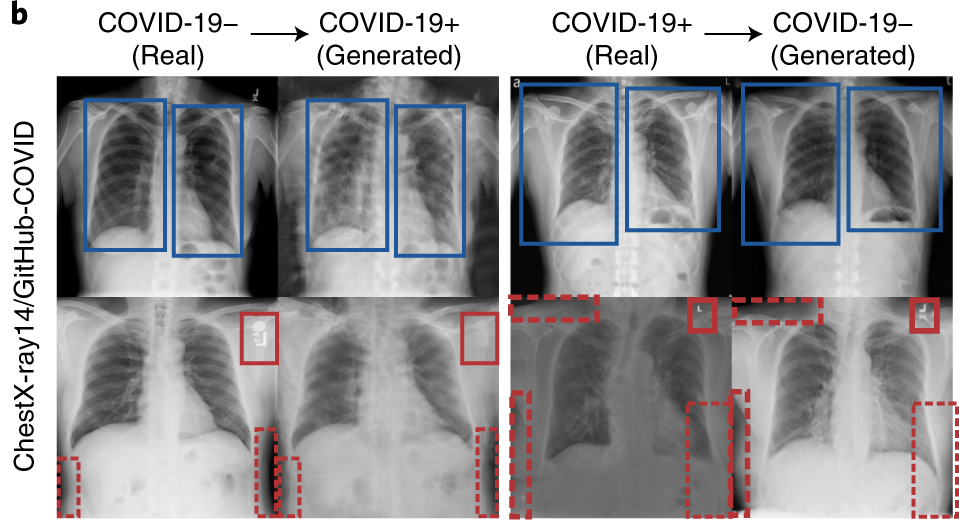
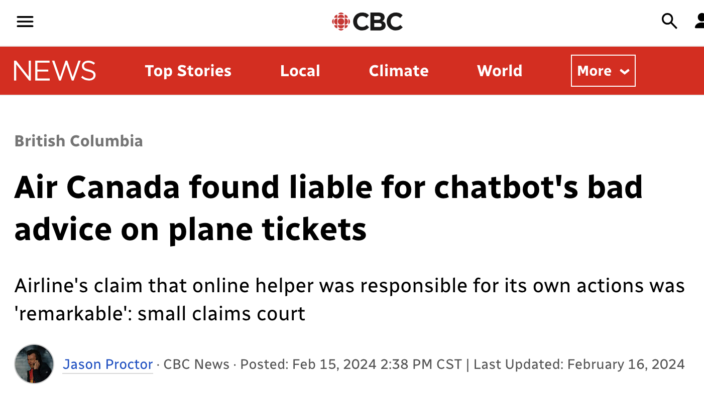

1. Introduction
course logistics
overall motivation
decomposing interpretability
Course Logistics
Weekly rhythm
Tuesday
- New methods
- Exercises [Conceptual]
Thursday
- Case study using method
- Exercises [Technical]
Friday (every ~ 3 weeks) * Homework due
Learning outcommes
- Compare the competing definitions of interpretable machine learning, the motivations behind them, and metrics that can be used to quantify whether they have been met.
- Within a specific application context, evaluate the trade-offs associated with competing interpretable machine learning techniques.
- Describe the theoretical foundation of intrinsically interpretable models like sparse regression, gaussian processes, and classification and regression trees, and apply them to realistic case studies with appropriate validation checks.
Learning outcommes
- Describe the theoretical foundation of post-hoc explanation methods like SHAP and linear probes values and apply them to realistic case studies with appropriate validation checks
- Analyze large-scale foundation models using methods like sparse autoencoders and describe their relevance to problems of model control and AI-driven design.
Materials
materials
Expectations
Evaluation
What is interpretability?
Reading
Lipton, Z. C. (2018). The Mythos of Model Interpretability. ACM Queue: Tomorrow’s Computing Today, 16(3), 31–57. https://doi.org/10.1145/3236386.3241340
Murdoch, W. J., Singh, C., Kumbier, K., Abbasi-Asl, R., & Yu, B. (2019). Definitions, methods, and applications in interpretable machine learning. Proceedings of the National Academy of Sciences of the United States of America, 116(44), 22071–22080. https://doi.org/10.1073/pnas.1900654116
What can go wrong?

Example from r Citep(bib, "Caruana2015IntelligibleMF").
What can go wrong?

Example from r Citep(bib, "Gu2017BadNetsIV").
What can go wrong?

What can go wrong?

Problems
- Fairness
- Safety
- Misinformation
Formulation gaps
In machine learning, most effort is directed towards ensuring models have good performance performance metrics on external benchmark data sets.
Models learning this way can be very accurate according to easily measured criteria like accuracy or computational efficiency but inappropriate with respect to properties that are harder to measure.
The gap between what we want our models to achieve and what we can easily encode in performance metrics is called a formulation gap.
Formulation gaps: Trust
Would you be willing to relinquish control to the model?
The answer depends on how it manages individual cases, not just than overall accuracy.

Formulation gaps: Transferability
Typical benchmarks randomly split data into training vs. test sets.
Models are often used in settings that don’t match those original training/test splits.
The use of models might themselves change the distribution of the data (pneumonia example from before).
See r Citep(bib, "mitPredictiveModels").
Formulation gaps: Informativeness
Models are often used to support discovery. This is a different task than automation.
While this is often an argument for using “white box” models, black boxes can still support discovery, e.g., by identifying similar cases in a medical diagnosis system.
Formulation gaps: Ethics
Models might amplify existing biases if only test accuracy is considered.
Fairness metrics have been defined to help guard against this risk, but there is no universal metric for fairness. Interpretability can help address broader demands for transparency.

Exercise: Past Experience
Introduce yourself to your neighbors. What is your name and degree program? What are your areas of interest? How might interpretability or explainability be helpful in the work that you do?
Then respond to [Past Experience] in the exercise sheet.
PDR Framework
Reference
r Citep(bib, "Murdoch2019")also breaks the vague concept of “interpretability” down into precise elements which can be more formally evaluated.Together, this helps establish trust in the reliability of the results, which is important in interdisciplinary work.
It also helps protect against unintended consequences that can arise after model deployment.
PDR Framework: Accuracy
Predictive Accuracy: The model-to-explain has to be accurate. There is not point “interpreting” a model that gives a poor approximation of reality.
Descriptive Accuracy: The interpretation should be faithful to the model. This is the extent to which the explanation reflects what the black box actually learned, which is not necessarily the same as what it was designed to learn.
The PDR Desiderata: Relevancy
Interpretations don’t exist in a vacuum. Like data visualizations, their complexity needs to be suitable to their audience.
For example, we might give three different explanations of the same model depending on whether we are communicating with biologists, clinicians, or statisticians.
Whether the outputs from interpretability outputs are relevant to their audience can be gauged by their adoption in specific scientific settings or how they are actually used by participants in user studies.
Spectrum of evaluation
Reference r Citep(bib, "rigorous_interpretability") notes that new interpretability techniques can be evaluated at several levels.
Functionally-grounded: Define computational proxy tasks that can be measured without studying real users.
Human-grounded: Consider simplified tasks that can be solved by general audience members. This can involve crowdsourcing.
Application grounded: Evaluate in the field with representative experts in a concrete end-use case.
Phases of method development
These different types of evaluation can inform one another. For example, we can define new proxy tasks based on the most challenging steps for experts.
New methods that do well in computational proxies are worth investigating through user studies.
Benchmarking
Each of these types fo evaluation will come with their own performance metrics.
We will revisit this question periodically as we introduce new methods and study the contexts in which they are worth applying.